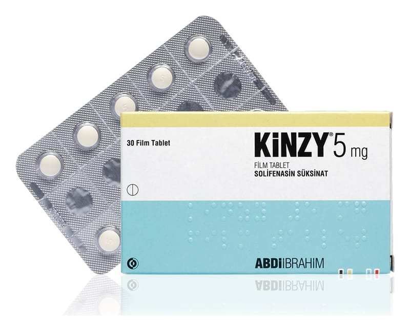

Kinzy 5 mg Film Tablet, 90 Adet

Ne için kullanılır
KT · Bölüm 1KİNZY idrar yollarındaki spaz mı gideric i (üriner antispazmotik) olarak bilinen bir ilaç grubuna dahildir. Bir tarafı “5” baskılı, açı k sarı renkli, yuvarlak, bikonveks film kaplı tablettir. KİNZY 30 ve 90 tabletlik ambalajlarda kullanıma sunulmuştur. KİNZY, aşırı çalışan idrar torbası belirtilerinin tedavisinde kullanılmaktadır. Bu belirtiler arasında sık idrara çıkmak ihtiyacı, sıkışarak tuvalete gitme ihtiyacı, zamanında tuvalete yetişememenizden kaynaklanan idrar kaçırma bulunmaktadır. KİNZY alındığı zaman etkin madde olan solifenasin vücudunuza salınarak idrar torbanızın faaliyetini azaltır ve idrar torbanızı kontrol altına alabilmenizi sağlar.